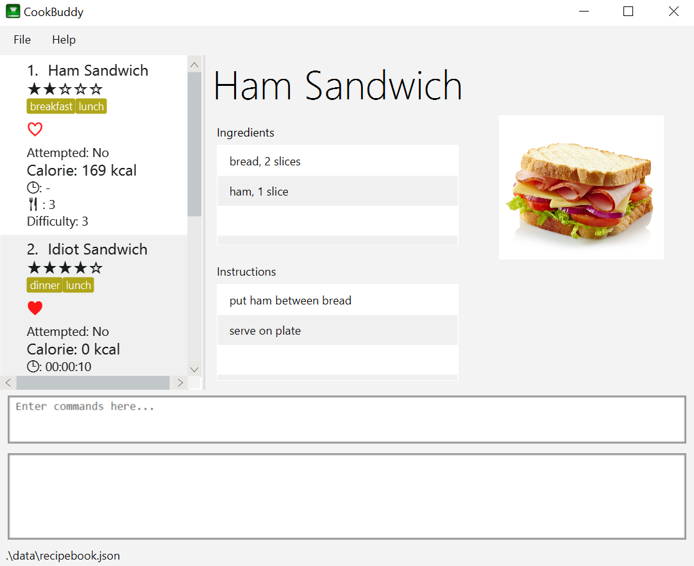

By: AY1920S2-CS2103T-W12-4 Since: Feb 2020 Licence: MIT
- 1. Introduction
- 2. Quick Start
- 3. Understanding CookBuddy’s GUI
- 4. Features
- 4.1. Help —
help - 4.2. Adding a recipe —
new - 4.3. Viewing a Recipe —
view - 4.4. Deleting a recipe —
delete - 4.5. Modifying a recipe —
modify - 4.6. Favouriting a recipe —
fav - 4.7. Un-Favouriting a recipe —
unfav - 4.8. Marking a recipe as done —
done - 4.9. Un-Marking a recipe as done —
undo - 4.10. Listing recipes —
list - 4.11. Finding recipes —
find - 4.12. Counting recipes —
count - 4.13. Deleting all recipes -
reset - 4.14. Exiting CookBuddy -
exit
- 4.1. Help —
- 5. FAQ
- 6. Command Summary
- 7. Glossary
1. Introduction
1.1. Product Information
Greetings, and welcome to CookBuddy!
Looking for an all-in-one solution to manage your recipe? Look no further!
CookBuddy is an integrated platform fully customized for users with the aim of helping you manage your recipes effectively. The application allows you to keep track of your recipes. It looks like you will never have to worry about finding your recipe anymore!
All your recipe information is comfortably compartmentalized on our simple and clean Graphical User Interface (GUI) and we are optimized for users who are very comfortable working on the Command Line Interface (CLI).
If you are looking for a way to easily manage your recipes and have quick fingers, then CookBuddy is definitely for you!
Interested? Proceed to Section 2, “Quick Start” to get started!
1.2. How to navigate this User Guide
This user guide provides documentation on CookBuddy such as a quick start guide and an overview of its features for you to fully utilise CookBuddy.
If you want to find out more about CookBuddy’s features and commands, you can go to the Section 4, “Features” section.
If you need an overview regarding the usage of CookBuddy’s commands, head on to the Section 6, “Command Summary” section.
Throughout this guide, you may come across a few symbols. They are used to draw your attention to important or note-worthy information.
Here are the symbols used in this User Guide:
| This block displays additional notes that contains extra information that you should take note of. |
| This block displays tips that you may find useful. |
2. Quick Start
The following steps will walk you through installing CookBuddy on your computer.
-
Ensure you have Java 11 or later installed on your computer.
-
If not, download and install the latest Java Runtime Environment from here.
-
-
Download the latest CookBuddy.jar from here.
-
Copy the executable to the folder you want to use as the home folder for CookBuddy.
-
Double-click the executable to start CookBuddy. CookBuddy’s GUI should appear in a few seconds.
Home page of CookBuddy -
Type your command in the command box and press Enter to execute it. e.g. typing
helpand pressing Enter will open the help window. -
Some example commands you can try:
-
list: lists all the recipes stored in CookBuddy. -
new n/Ham Sandwich ing/bread, 2 slices; ham, 1 slice ins/put ham between bread; serve on plate: adds a recipe named "Ham Sandwich" to CookBuddy. -
delete 3: deletes the 3rd recipe shown in the current list from CookBuddy. -
exit: quits CookBuddy.
-
-
Refer to Section 4, “Features” for details of each command.
3. Understanding CookBuddy’s GUI
This section teaches you on how to utilise CookBuddy’s GUI.
There are four major components that you will be using in CookBuddy, which will be referenced in the upcoming sections.
-
Menu bar
The menu bar contains clickable buttons that you can use to execute certain commands, such as help,helpto open the help window. -
Command Line
The command line is where you enter all your commands in CookBuddy.After entering your command, you can execute it by simply using the Enter key on your keyboard!
-
Result Display
The result display displays feedback from CookBuddy to you after you have executed a command in CookBuddy. -
Status bar
The status bar shows you the path where your data is saved when you are using the features of CookBuddy.
4. Features
The following sub-sections describes the features you can use in CookBuddy.
4.1. Help — help
You can list all the commands recognised by CookBuddy by typing help into the command box and pressing Enter.
If you also specify a command after typing help, CookBuddy will show how to use that specific command.
Format: help [COMMAND]
| You can also execute this command by using the F1 key on your keyboard. |
Example 1: You can type help and CookBuddy will display the commands that it recognises.
Expected Outcome
A separate help window will appear.
Example 2: You can type help delete and CookBuddy will show you how to use the delete command.
Expected Outcome
A separate help window will appear with details on the delete command’s usage.

4.2. Adding a recipe — new
You can add a new recipe to CookBuddy using the new command.
| Parameters in bold indicate they are mandatory. |
Format: new n/NAME ing/INGREDIENT, QUANTITY [; …] ins/INSTRUCTION [; …] [cal/CALORIES] [s/SERVING_SIZE]
[r/RATING] [t/TAG [, …]]
CookBuddy accepts the following parameters:
-
n/- name -
ing/- ingredients -
ins/- instructions -
p/- absolute image path -
cal/- calories (in kcal) -
s/- serving size (any integer greater than 0) -
r/- rating (any integer between 0-5, inclusive) -
d/- difficulty (any integer between 0-5, inclusive) -
t/- tags (separated by commas)
Example 1: You can enter new n/Fried Rice ing/White rice, 1 cup; salt, 1 gram ins/Fry the rice; add salt into CookBuddy, and a new recipe with the following attributes will be added:
-
Name: Fried Rice
-
Ingredients:
-
1 cup of white rice
-
1 gram of salt
-
-
Instructions:
-
Fry the rice
-
Add salt
-
Expected Outcome

new command including the attributes of the recipenew command, the new recipe will be added to CookBuddy and will be displayed.4.3. Viewing a Recipe — view
You can view a recipe at the given index on CookBuddy using the view command.
Format: view INDEX
|
Example: You can type view 2 and CookBuddy will display you the recipe at index 2 on the main page.
Expected Outcome
view command, the recipe will be displayed to you4.4. Deleting a recipe — delete
You can delete an existing recipe from CookBuddy using the delete command.
Format: delete INDEX
Example: You can type delete 1 and CookBuddy will delete the recipe at index 1.
|
Expected Outcome


delete command, the recipe will be removed from CookBuddy|
This command cannot be undone. Once a + |
4.5. Modifying a recipe — modify
You can modify the attributes of an existing recipe in CookBuddy using the modify command.
Format: modify INDEX [ing/INGREDIENT, QUANTITY [; …]] [ins/INSTRUCTION [; …]] [cal/CALORIES] [s/SERVING_SIZE]
[r/RATING] [t/TAG [, …]]
|
4.5.1. Modifying a recipe’s ingredients
You can modify a recipe’s ingredients by appending ing/INGREDIENT, QUANTITY [; …] to a modify command.
Example: You can type modify 1 ing/ham, 2 slices and CookBuddy will modify the ingredients of the 1st recipe in
the list to contain 2 slices of ham.
4.5.2. Modifying a recipe’s instructions
You can modify a recipe’s instructions by appending ins/INSTRUCTION [; …] to a modify command.
Example: You can type modify 2 ins/boil eggs; slice apples and CookBuddy will modify the instructions in the 2nd
recipe to contain two instructions:
-
boil eggs
-
slice apples
4.5.3. Modifying a recipe’s tags
You can modify a recipe’s tags by appending [t/TAG [, …]] to a modify command.
If you want to remove all the tags from the recipe, append t/ instead.
Example 1: You can type modify 2 t/lunch, dinner and CookBuddy will update the tags in the 1st recipe to contain
two tags:
-
lunch
-
dinner
Expected Outcome
modify command, the recipe’s tags will be changed accordinglyExample 2: You can type modify 1 t/ and CookBuddy will remove all the existing tags from the 1st recipe.
Expected Outcome

modify command, the recipe’s tags will be removed accordingly4.6. Favouriting a recipe — fav
You can favourite an existing recipe from CookBuddy using the fav command.
Format: fav INDEX
|
Example: You can type fav 1 and CookBuddy will favourite the recipe at index 1.
4.7. Un-Favouriting a recipe — unfav
You can un-favourite an existing recipe from CookBuddy using the unfav command.
Format: unfav INDEX
|
4.8. Marking a recipe as done — done
You can mark an existing recipe from CookBuddy as being done using the done command. This indicates that the recipe
has been attempted.
Format: done INDEX
|
Example: You can type done 1 and CookBuddy will mark the recipe at index 1 as being done, indicating that it has
been attempted.
4.9. Un-Marking a recipe as done — undo
You can un-mark an existing recipe from CookBuddy as being done, using the`undo` command. This indicates that the recipe has not been attempted.
Format: undo INDEX
|
Example: You can type undo 1 and CookBuddy will un-mark the recipe at index 1 as done, indicating that it has not
been attempted.
4.10. Listing recipes — list
You can list all the existing recipes from CookBuddy using the list command. This command also helps to refresh
the current recipe list.
Format: list
Example: You can type list and CookBuddy will display all the recipes that are currently stored in it.
4.11. Finding recipes — find
You can find an existing recipe with a particular parameter from CookBuddy using the find command.
Format: find [n/NAME […]] [ing/INGREDIENT […]]
|
4.11.1. Finding a recipe by name
You can find a recipe by its name by appending n/NAME […] to a find command.
Example: You can type find n/sandwich and CookBuddy will display recipes that contain the word sandwich in their name.
4.11.2. Finding a recipe by ingredient
You can find a recipe by its ingredient by appending [ing/INGREDIENT […]] to a find command.
Example: You can type find ing/bread and CookBuddy will display the recipes containing bread as an ingredient to you.
4.12. Counting recipes — count
You can count the total number of recipes stored in CookBuddy using the count command.
Format: count
Example: You can type count and CookBuddy will display the total number of recipes stored in it.
4.13. Deleting all recipes - reset
You can remove all the recipes stored in CookBuddy using the `reset`command.
Format: reset
Example: You can type reset and CookBuddy will clear all the recipes stored in it.
4.14. Exiting CookBuddy - exit
You can exit from CookBuddy using the exit command.
Format: exit
Example: You can type exit and CookBuddy will terminate.
5. FAQ
The following section answers some questions you might have regarding CookBuddy.
Q: Is CookBuddy safe to use?
A: Yes, CookBuddy is safe to use. We regularly review our code to ensure that there are no vulnerabilities for hackers to exploit.
Q: Is CookBuddy secure?
A: Yes, CookBuddy is secure. Your data is stored only on your computer. No data is sent to any online server.
Q: Do I need an Internet connection to use CookBuddy?
A: No. CookBuddy works 100% offline.
Q: Will CookBuddy receive updates?
A: Yes. We are a dedicated team of software developers who are constantly collating feedback and running tests on the app. We are also working towards delivering additional features for our users.
Q: Can I use CookBuddy on a mobile device?
A: CookBuddy is designed to work best on a desktop/ laptop computer. We are currently working on releasing CookBuddy on mobile platforms.
Q: How do I transfer my data to another Computer?
A: Download the jar in the other computer and copy the entire data folder over to the same directory. Run CookBuddy and update the preferences.json if necessary.
Q: How do I retrieve back all the recipes in CookBuddy if I accidentally reset CookBuddy?
A: Right now CookBuddy does not support a backup feature. Thus, it would be best if you do not accidentally use the reset
command. The backup feature will be released soon in the near future.
Q: CookBuddy is not working on my computer. How do I fix it?
A:Ensure that your computer is running on Java 11 and not other versions. CookBuddy does not support other versions of Java.
6. Command Summary
The following section gives a quick summary of all the commands you can use in CookBuddy arranged in an alphabetical order.
| Command | Usage |
|---|---|
|
Counts the total number of recipes stored in CookBuddy. |
|
Deletes the recipe at the given |
|
Marks the recipe at the given |
|
Exits CookBuddy. |
|
Favourites the recipe at the given |
|
Finds an existing recipe with the given parameter(s) from CookBuddy. |
|
Lists all the commands recognised by CookBuddy. |
|
Displays how to use the |
|
Lists all the recipes. |
|
Modifies the given parameter(s) of the recipe. |
|
Adds a new recipe. |
|
Removes all the recipes from CookBuddy. |
|
Undoes the recipe at the given |
|
Un-favourites the recipe at the given |
|
Displays the recipe at the given |
7. Glossary
This section will cover and explain certain technical/CookBuddy specific terms used in this user guide.
| Term | Explanation |
|---|---|
Command Line Interface (CLI) |
A user interface where a user is required to use the program by entering commands into a text box. |
Graphical User Interface (GUI) |
A user interface that includes visuals such as buttons, icons, images, menus etc. |
Metadata |
Details associated with an entity. For example, metadata of a |